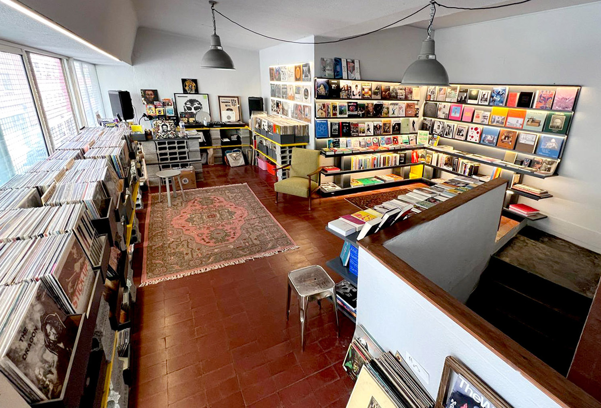

Hidden in Príncipe Real, @altaphotolisboa exists side by side with @laltarecordslisboa
Founded and conceived by Pedro and Sérgio — a photographer and curator with over 25 years of experience, and a lifelong collector, curator, and DJ — the space is a quiet hub for exhibitions, 1/1 prints, workshops, micro-venues, and photo walks through the neighborhood. The 35-year vinyl collection sets the tone: original pressings, first editions, impossible records, and deep listening.
A gallery, a record sanctuary, a hidden cultural spot.
Welcome to Alta.
Rua Marcos Portugal 91b Lisboa
@alta.photo.lisboa
@alta.records.lisboa